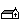
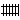
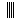
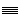

Effacer
EffacerPour sélectionner l'effaceur d'objets.
 Maison
MaisonPour sélectionner l'objet correspondant à une maison.
 Grande maison
Grande maisonPour sélectionner l'objet correspondant à une grande maison.
 Croix
CroixPour sélectionner l'objet correspondant à une croix.
 Chapelle
Pour sélectionner l'objet correspondant à une Chapelle.
 Eglise
EglisePour sélectionner l'objet correspondant à une église.
 Mosquée
MosquéePour sélectionner l'objet correspondant à une mosquée.
 Hopital
HopitalPour sélectionner l'objet correspondant à un hopital.
 Station service
Station servicePour sélectionner l'objet correspondant à une station service.
 Parking
ParkingPour sélectionner l'objet correspondant à un parking.
Contrôle de passage
Pour sélectionner l'objet correspondant à un contrôle de passage.
 Panneau Stop
Panneau StopPour sélectionner l'objet correspondant à un panneau Stop.
 Panneau Ceder le passage
Panneau Ceder le passagePour sélectionner l'objet correspondant à un panneau Ceder le passage.
 Panneau Sens interdit
Panneau Sens interditPour sélectionner l'objet correspondant à un panneau Sens interdit.
 Feux de circulation
Feux de circulationPour sélectionner l'objet correspondant à un feux de circulation.
 Arbre
ArbrePour sélectionner l'objet correspondant à un arbre.
 Sapin
SapinPour sélectionner l'objet correspondant à un sapin.
 Rail Nord Sud
Rail Nord SudPour sélectionner l'objet correspondant à un rail orienté Nord Sud.
 Rail Est Ouest
Pour sélectionner l'objet correspondant à un rail orienté Est Ouest.
 Rivière Nord sud
Pour sélectionner l'objet correspondant à une rivière orientée Nord sud.
 Rivière Est Ouest
Pour sélectionner l'objet correspondant à une rivière orientée Est Ouest.
 Cercle
CerclePour sélectionner l'objet correspondant à un cercle.
Rond
Pour sélectionner l'objet correspondant à un rond.
 Barrière verticale
Barrière verticalePour sélectionner l'objet correspondant à une barrière verticale.
 Barrière Horizontale
Barrière HorizontalePour sélectionner l'objet correspondant à une barrière horizontale.